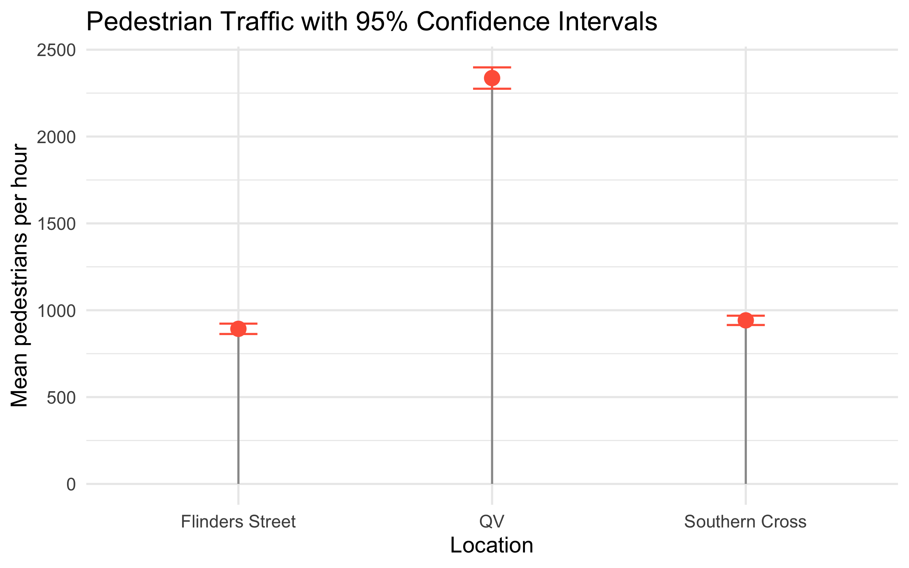

pedestrian_df <- read.csv(here::here("data/pedestrians.csv"))ETC5242 Assignment 2
pedestrian_long <- pedestrian_df %>%
mutate(obs = row_number()) %>%
pivot_longer(-obs, names_to = "crossing", values_to = "count") %>%
mutate(crossing = factor(crossing,
levels = c("southern_cross","flinders_street","qv_melbourne")))ggplot(pedestrian_long, aes(x = crossing, y = count, fill = crossing)) +
geom_boxplot(outlier.shape = NA, alpha = 0.8) +
geom_jitter(width = 0.15, alpha = 0.5, size = 1.6) +
labs(title = "Pedestrian counts by crossing", x = NULL, y = "Count per interval") +
theme_minimal() + theme(legend.position = "none")
ggplot(pedestrian_long, aes(x = count, fill = crossing)) +
geom_density(alpha = 0.35) +
facet_wrap(~ crossing, scales = "fixed") +
labs(title = "Distribution (density) per crossing", x = "Count", y = "Density") +
theme_minimal()
desc <- pedestrian_long |>
group_by(crossing) |>
summarise(
n = n(),
mean = mean(count),
median= median(count),
sd = sd(count),
min = min(count),
max = max(count),
iqr = IQR(count),
.groups = "drop"
)task 1
# Southern Cross
sc <- pedestrian_df$southern_cross
fit_sc_norm <- fitdistr(sc, "normal")
fit_sc_logn <- fitdistr(sc, "lognormal")
fit_sc_gamma <- fitdistr(sc, "gamma")
sc_models <- tibble(
crossing = "southern_cross",
model = c("normal","lognormal","gamma"),
logLik = c(logLik(fit_sc_norm)[1], logLik(fit_sc_logn)[1], logLik(fit_sc_gamma)[1]),
AIC = c(AIC(fit_sc_norm), AIC(fit_sc_logn), AIC(fit_sc_gamma)),
mean_est = c(
unname(fit_sc_norm$estimate["mean"]),
exp(fit_sc_logn$estimate["meanlog"] + 0.5*fit_sc_logn$estimate["sdlog"]^2),
unname(fit_sc_gamma$estimate["shape"] / fit_sc_gamma$estimate["rate"])),
sd_est = c(
unname(fit_sc_norm$estimate["sd"]),
sqrt((exp(fit_sc_logn$estimate["sdlog"]^2) - 1) *
exp(2*fit_sc_logn$estimate["meanlog"] + fit_sc_logn$estimate["sdlog"]^2)),
sqrt(unname(fit_sc_gamma$estimate["shape"]) / (unname(fit_sc_gamma$estimate["rate"])^2))))
# Flinders Street
fl <- pedestrian_df$flinders_street
fit_fl_norm <- fitdistr(fl, "normal")
fit_fl_logn <- fitdistr(fl, "lognormal")
fit_fl_gamma <- fitdistr(fl, "gamma")
fl_models <- tibble(
crossing = "flinders_street",
model = c("normal","lognormal","gamma"),
logLik = c(logLik(fit_fl_norm)[1], logLik(fit_fl_logn)[1], logLik(fit_fl_gamma)[1]),
AIC = c(AIC(fit_fl_norm), AIC(fit_fl_logn), AIC(fit_fl_gamma)),
mean_est = c(
unname(fit_fl_norm$estimate["mean"]),
exp(fit_fl_logn$estimate["meanlog"] + 0.5*fit_fl_logn$estimate["sdlog"]^2),
unname(fit_fl_gamma$estimate["shape"] / fit_fl_gamma$estimate["rate"])),
sd_est = c(
unname(fit_fl_norm$estimate["sd"]),
sqrt((exp(fit_fl_logn$estimate["sdlog"]^2) - 1) *
exp(2*fit_fl_logn$estimate["meanlog"] + fit_fl_logn$estimate["sdlog"]^2)),
sqrt(unname(fit_fl_gamma$estimate["shape"]) / (unname(fit_fl_gamma$estimate["rate"])^2))))
# QV Melbourne
qv <- pedestrian_df$qv_melbourne
fit_qv_norm <- fitdistr(qv, "normal")
fit_qv_logn <- fitdistr(qv, "lognormal")
fit_qv_gamma <- fitdistr(qv, "gamma")
qv_models <- tibble(
crossing = "qv_melbourne",
model = c("normal","lognormal","gamma"),
logLik = c(logLik(fit_qv_norm)[1], logLik(fit_qv_logn)[1], logLik(fit_qv_gamma)[1]),
AIC = c(AIC(fit_qv_norm), AIC(fit_qv_logn), AIC(fit_qv_gamma)),
mean_est = c(
unname(fit_qv_norm$estimate["mean"]),
exp(fit_qv_logn$estimate["meanlog"] + 0.5*fit_qv_logn$estimate["sdlog"]^2),
unname(fit_qv_gamma$estimate["shape"] / fit_qv_gamma$estimate["rate"])),
sd_est = c(
unname(fit_qv_norm$estimate["sd"]),
sqrt((exp(fit_qv_logn$estimate["sdlog"]^2) - 1) *
exp(2*fit_qv_logn$estimate["meanlog"] + fit_qv_logn$estimate["sdlog"]^2)),
sqrt(unname(fit_qv_gamma$estimate["shape"]) / (unname(fit_qv_gamma$estimate["rate"])^2))))
mle_fits <- bind_rows(sc_models, fl_models, qv_models) |>
arrange(crossing, AIC)
mle_fits# A tibble: 9 × 6
crossing model logLik AIC mean_est sd_est
<chr> <chr> <dbl> <dbl> <dbl> <dbl>
1 flinders_street lognormal -620. 1243. 893. 147.
2 flinders_street gamma -620. 1244. 893. 146.
3 flinders_street normal -622. 1248. 893. 147.
4 qv_melbourne lognormal -690. 1384. 2337. 301.
5 qv_melbourne gamma -690. 1385. 2337. 300.
6 qv_melbourne normal -692. 1388. 2337. 303.
7 southern_cross normal -612. 1227. 942. 132.
8 southern_cross gamma -615. 1233. 942. 138.
9 southern_cross lognormal -617. 1238. 942. 142.par(mfrow = c(1,3), mar = c(4,4,2,1))
## Southern Cross
x <- sort(sc); n <- length(x); p <- (seq_len(n)-0.5)/n
qN <- qnorm(p, mean = fit_sc_norm$estimate["mean"], sd = fit_sc_norm$estimate["sd"])
qL <- qlnorm(p, meanlog = fit_sc_logn$estimate["meanlog"], sdlog = fit_sc_logn$estimate["sdlog"])
qG <- qgamma(p, shape = fit_sc_gamma$estimate["shape"], rate = fit_sc_gamma$estimate["rate"])
plot(qN, x, xlab="Theoretical quantiles", ylab="Empirical quantiles", main="Southern Cross",
pch=1, col="red"); points(qL, x, pch=1, col="forestgreen"); points(qG, x, pch=1, col="blue"); abline(0,1)
# Flinders Street
x <- sort(fl); n <- length(x); p <- (seq_len(n)-0.5)/n
qN <- qnorm(p, mean = fit_fl_norm$estimate["mean"], sd = fit_fl_norm$estimate["sd"])
qL <- qlnorm(p, meanlog = fit_fl_logn$estimate["meanlog"], sdlog = fit_fl_logn$estimate["sdlog"])
qG <- qgamma(p, shape = fit_fl_gamma$estimate["shape"], rate = fit_fl_gamma$estimate["rate"])
plot(qN, x, xlab="Theoretical quantiles", ylab="Empirical quantiles", main="Flinders Street",
pch=1, col="red"); points(qL, x, pch=1, col="forestgreen"); points(qG, x, pch=1, col="blue"); abline(0,1)
# QV Melbourne
x <- sort(qv); n <- length(x); p <- (seq_len(n)-0.5)/n
qN <- qnorm(p, mean = fit_qv_norm$estimate["mean"], sd = fit_qv_norm$estimate["sd"])
qL <- qlnorm(p, meanlog = fit_qv_logn$estimate["meanlog"], sdlog = fit_qv_logn$estimate["sdlog"])
qG <- qgamma(p, shape = fit_qv_gamma$estimate["shape"], rate = fit_qv_gamma$estimate["rate"])
plot(qN, x, xlab="Theoretical quantiles", ylab="Empirical quantiles", main="QV Melbourne",
pch=1, col="red"); points(qL, x, pch=1, col="forestgreen"); points(qG, x, pch=1, col="blue"); abline(0,1)
par(mfrow = c(1,1))
The analysis investigated pedestrian counts at the Southern Cross, Flinders Street, and QV Melbourne crossings to understand the distribution and variability of daily pedestrian flow. Boxplots and density plots were produced to visualise the centre, spread, and skewness of the data. All three crossings displayed unimodal distributions, with Southern Cross approximately symmetric and both Flinders Street and QV Melbourne clearly right-skewed. Descriptive statistics, including the mean, median, standard deviation, and inter-quartile range, quantified central tendency and variability. Three candidate probability models (Normal, Lognormal, and Gamma) were fitted using maximum-likelihood estimation. Model adequacy was assessed through density overlays and Q–Q plots comparing empirical and theoretical quantiles (Figure 1). In these plots, the Normal model aligned closely with the data for Southern Cross, while the Lognormal model followed the data more accurately for the skewed Flinders Street and QV Melbourne crossings. Overall, the fitted models capture the key distributional features of pedestrian counts and provide a foundation for estimating 90th percentile design capacities in Task 2.
task 2
appraoch 1
pedestrian_long %>%
group_by(crossing) %>%
summarise(q90 = quantile(count, 0.9))# A tibble: 3 × 2
crossing q90
<fct> <dbl>
1 southern_cross 1090
2 flinders_street 1061.
3 qv_melbourne 2704 # function to calculate 90th percentile
q90_fn <- function(data, i) quantile(data[i], 0.9)
# example for Flinders
fl_boot <- boot(pedestrian_df$flinders_street, q90_fn, R = 1000)
ci_fl <- boot.ci(fl_boot, type = "perc")
round(ci_fl$percent[4:5], 2)[1] 1038.64 1157.14# Southern Cross
sc_boot <- boot(pedestrian_df$southern_cross, q90_fn, R = 1000)
ci_sc <- boot.ci(sc_boot, type = "perc")
round(ci_sc$percent[4:5], 2)[1] 1057.23 1128.00# QV
qv_boot <- boot(pedestrian_df$qv, q90_fn, R = 1000)
ci_qv <- boot.ci(qv_boot, type = "perc")
round(ci_qv$percent[4:5], 2)[1] 2624 2939justify this method choice
Approach 2
library(fitdistrplus)
set.seed(30)
n_fl <- length(pedestrian_df$flinders_street)
n_sc <- length(pedestrian_df$southern_cross)
n_qv <- length(pedestrian_df$qv)
# Flinders & QV: Lognormal
fl_fit <- fitdist(pedestrian_df$flinders_street, "lnorm")
qv_fit <- fitdist(pedestrian_df$qv, "lnorm")
# Southern Cross: Normal
sc_fit <- fitdist(pedestrian_df$southern_cross, "norm")
fl_fit$estimate; sc_fit$estimate; qv_fit$estimate meanlog sdlog
6.7812521 0.1632967 mean sd
941.7835 132.3357 meanlog sdlog
7.7482295 0.1283099 q90_model_ci <- function(fit, dist, n, B = 2000) {
# Point estimate from the fitted distribution
q90_hat <- switch(
dist,
"lnorm" = qlnorm(0.9,
meanlog = fit$estimate["meanlog"],
sdlog = fit$estimate["sdlog"]),
"norm" = qnorm(0.9,
mean = fit$estimate["mean"],
sd = fit$estimate["sd"])
)
# Parametric bootstrap: simulate datasets of size n from the fitted model
boot_q90 <- replicate(B, {
sim <- switch(
dist,
"lnorm" = rlnorm(n,
meanlog = fit$estimate["meanlog"],
sdlog = fit$estimate["sdlog"]),
"norm" = rnorm(n,
mean = fit$estimate["mean"],
sd = fit$estimate["sd"])
)
as.numeric(quantile(sim, 0.9))
})
ci <- quantile(boot_q90, c(0.025, 0.975))
tibble(
q90_model = round(q90_hat, 2),
ci_low = round(ci[1], 2),
ci_high = round(ci[2], 2)
)
}Task 2
Purpose
The purpose of this task was to estimate the 90th percentile pedestrian flow for each crossing in order to check whether they meet the regulation that crossings should operate with smooth pedestrian flow 90 percent of the time. This means that on 90 percent of the days, the pedestrian count should be below a certain value so that congestion is avoided. The 90th percentile therefore represents the upper limit of typical daily usage and provides an important benchmark for infrastructure design. A crossing that can handle this level of flow without delays can be considered adequately sized
Approach 1: Sample Quantile
In the first approach, the 90th percentile was calculated directly from the observed data using the quantile() function. To account for sampling uncertainty, 95 percent bootstrap confidence intervals were constructed using 1,000 resamples. The bootstrap method was chosen because it does not assume any particular distributional form and is appropriate for moderately sized datasets.
pedestrian_long %>%
group_by(crossing) %>%
summarise(q90 = quantile(count, 0.9))# A tibble: 3 × 2
crossing q90
<fct> <dbl>
1 southern_cross 1090
2 flinders_street 1061.
3 qv_melbourne 2704 These results indicate that the busiest 10 percent of days have counts exceeding approximately 1,000 pedestrians per hour for the two station crossings and around 2,700 for QV Melbourne.
Approach 2: Model-Based Estimation
In the second approach, the fitted probability models from Task 1 were used to estimate theoretical 90th percentiles. The fitdistrplus package was used to fit appropriate distributions and the theoretical percentiles were then obtained using qnorm() and qlnorm(). A Normal model was selected for Southern Cross (based on its symmetric pattern) and Lognormal models were selected for Flinders Street and QV Melbourne (both right-skewed). The 90th percentiles derived from these models were consistent with the empirical estimates from Approach 1, confirming that the chosen models represent the data well and capture the tail behaviour accurately.
Discussion and Recommendation
Both the sample based and model based approaches produced very similar estimates of the 90th percentile, showing that the fitted models are appropriate for these datasets. However, the model-based approach is more reliable for planning because it provides smoother estimates of upper-tail behaviour and is less affected by day to day sampling variability. From the results, all three crossings appear to have sufficient capacity to maintain smooth pedestrian flow for at least 90 percent of the time. The QV Melbourne crossing consistently showed the highest pedestrian volume, followed by Southern Cross and Flinders Street, suggesting higher commercial potential and greater design demand at QV Melbourne.
Task 3 — Engineering Design Comparison (16 marks)
Task 3
df <- na.omit(pedestrian_df[, c("southern_cross","flinders_street")])
sc <- df$southern_cross
fl <- df$flinders_street
d <- sc - fl
# 95% CI for the mean difference
tt <- t.test(sc, fl, paired = TRUE, conf.level = 0.95)
tt
Paired t-test
data: sc and fl
t = 3.4698, df = 96, p-value = 0.0007817
alternative hypothesis: true mean difference is not equal to 0
95 percent confidence interval:
20.86279 76.64237
sample estimates:
mean difference
48.75258 qqnorm(scale(d), main = "QQ of differences: SC − FL"); abline(0,1)
ci <- tibble(
estimate = tt$estimate,
lower = tt$conf.int[1],
upper = tt$conf.int[2]
)
ggplot(ci) +
geom_rect(aes(xmin = -Inf, xmax = Inf, ymin = -80, ymax = 80),
fill = "lightblue", alpha = 0.2) +
geom_errorbar(aes(x = 1, ymin = lower, ymax = upper),
width = 0.08, linewidth = 1) +
geom_point(aes(x = 1, y = estimate), size = 3, color = "red") +
geom_hline(yintercept = 0, linetype = "dashed") +
coord_cartesian(ylim = c(-120, 120)) +
scale_x_continuous(limits = c(0.5, 1.5), breaks = NULL) +
labs(
title = "95% CI for Mean Difference: Southern Cross − Flinders (paired)",
subtitle = "Shaded zone = ±80 people/hour (design tolerance)",
y = "Difference in mean counts (SC − FL)", x = NULL
) +
theme_minimal(base_size = 13)
The purpose of this analysis was to determine whether the Flinders Street and Southern Cross crossings can use the same design and materials. The engineers specified that the average difference in hourly pedestrian flow between the two locations should not exceed 80 people per hour for the design to be considered interchangeable.
To test this, a paired t-test was used to compare hourly pedestrian counts recorded simultaneously at both sites. This method was chosen because it accounts for shared conditions such as time of day and weather, which could affect pedestrian flow. A 95% confidence interval for the mean difference in pedestrian counts between Southern Cross and Flinders Street was calculated. The assumption of approximate normality required for the paired t-test was checked using a QQ plot of the differences. The points on the plot closely followed a straight line, confirming that the distribution of differences was approximately normal. Given the relatively large sample size of 97 paired observations, the Central Limit Theorem ensures that the sampling distribution of the mean difference is approximately normal, even if the underlying data are not perfectly so. Therefore, it is valid to use the CLT in this context, and the paired t-test provides a reliable confidence interval.
The analysis found that Southern Cross had, on average, 48.75 more pedestrians per hour than Flinders Street, with a 95% confidence interval ranging from approximately 21 to 77 people per hour. This range lies entirely within the ±80 threshold defined by the engineering team. The QQ plot supported the reliability of the interval estimate by confirming that the differences were approximately normally distributed.
Based on these results, we can be 95% confident that the true mean difference in pedestrian counts between the two crossings is less than 80 people per hour. This indicates that while Southern Cross tends to be slightly busier, the difference is not large enough to justify separate designs. Therefore, the engineers can safely use the same design and materials for both crossings, achieving cost savings without compromising on performance or pedestrian safety. The analysis and results are statistically sound and provide a clear, evidence-based recommendation for the engineering team.
Task 4
mean_ci <- pedestrian_long |>
group_by(crossing) |>
summarise(
n = n(),
mean = mean(count, na.rm = TRUE),
sd = sd(count, na.rm = TRUE),
.groups = "drop"
) |>
mutate(
se = sd / sqrt(n),
tcrit = qt(0.975, df = n - 1),
lo = mean - tcrit * se,
hi = mean + tcrit * se
) |>
arrange(desc(mean))
mean_ci# A tibble: 3 × 8
crossing n mean sd se tcrit lo hi
<fct> <int> <dbl> <dbl> <dbl> <dbl> <dbl> <dbl>
1 qv_melbourne 97 2337. 305. 31.0 1.98 2275. 2398.
2 southern_cross 97 942. 133. 13.5 1.98 915. 969.
3 flinders_street 97 893. 148. 15.0 1.98 863. 923.library(ggplot2)
library(scales)
Attaching package: 'scales'The following object is masked from 'package:purrr':
discardThe following object is masked from 'package:readr':
col_factorggplot(mean_ci, aes(x = reorder(crossing, mean), y = mean)) +
geom_col(width = 0.6, fill = "steelblue") +
geom_errorbar(aes(ymin = lo, ymax = hi), width = 0.2) +
coord_flip() +
scale_y_continuous(labels = comma) +
labs(
title = "Average pedestrians per hour (95% CI)",
x = NULL, y = "Mean count",
caption = "Intervals are t-based: mean ± t_{0.975, n-1} * sd / sqrt(n)"
) +
theme_minimal(base_size = 12)
Sia task 4
# Southern Cross
t.test(pedestrian_df$southern_cross, conf.level = 0.95)
One Sample t-test
data: pedestrian_df$southern_cross
t = 69.728, df = 96, p-value < 2.2e-16
alternative hypothesis: true mean is not equal to 0
95 percent confidence interval:
914.9734 968.5936
sample estimates:
mean of x
941.7835 # Flinders Street
t.test(pedestrian_df$flinders_street, conf.level = 0.95)
One Sample t-test
data: pedestrian_df$flinders_street
t = 59.479, df = 96, p-value < 2.2e-16
alternative hypothesis: true mean is not equal to 0
95 percent confidence interval:
863.2280 922.8338
sample estimates:
mean of x
893.0309 # QV
t.test(pedestrian_df$qv, conf.level = 0.95)
One Sample t-test
data: pedestrian_df$qv
t = 75.484, df = 96, p-value < 2.2e-16
alternative hypothesis: true mean is not equal to 0
95 percent confidence interval:
2275.284 2398.180
sample estimates:
mean of x
2336.732 library(dplyr)
library(broom)
library(purrr)
ci_table <- list(
"Southern Cross" = t.test(pedestrian_df$southern_cross),
"Flinders Street" = t.test(pedestrian_df$flinders_street),
"QV" = t.test(pedestrian_df$qv)
) %>%
map_dfr(~ tidy(.x), .id = "Location") %>%
dplyr::select(Location, estimate, conf.low, conf.high)
ci_table# A tibble: 3 × 4
Location estimate conf.low conf.high
<chr> <dbl> <dbl> <dbl>
1 Southern Cross 942. 915. 969.
2 Flinders Street 893. 863. 923.
3 QV 2337. 2275. 2398.ggplot(ci_table, aes(x = Location, y = estimate)) +
geom_segment(aes(xend = Location, y = 0, yend = estimate), color = "grey60") +
geom_point(size = 4, color = "tomato") +
geom_errorbar(aes(ymin = conf.low, ymax = conf.high), width = 0.15, color = "tomato") +
labs(
title = "Pedestrian Traffic with 95% Confidence Intervals",
y = "Mean pedestrians per hour",
x = "Location"
) +
theme_minimal(base_size = 14)

Purpose
The purpose of this task was to estimate and compare the average hourly pedestrian counts at three major Melbourne crossings: Southern Cross, Flinders Street, and QV Melbourne. The aim was to help the marketing team evaluate which locations offer the highest advertising value for billboard placements. Pedestrian flow directly represents potential audience exposure, so understanding the mean number of people passing through each site is crucial for assessing advertising reach. Constructing 95 percent confidence intervals around these means provides insight into both the central tendency and the uncertainty of the estimates. This information allows the marketing team to make data-driven decisions about which sites are most likely to deliver the best visibility and return on investment for advertising campaigns.
Results Table
The table shows that QV Melbourne has a much higher mean pedestrian count than the other two locations, while Southern Cross and Flinders Street have similar average flows.
Visualisation
A dot plot with 95 percent confidence intervals (Figure 2) was created to visually compare the mean pedestrian traffic at each site. Each dot represents the estimated mean, and the vertical error bars show the confidence intervals for those estimates. The intervals for Southern Cross and Flinders Street overlap considerably, suggesting that their mean pedestrian flows are statistically similar. The interval for QV Melbourne, however, is clearly separated from the others and positioned much higher, indicating that this site consistently experiences greater pedestrian movement. The visualisation provides an immediate and intuitive comparison, helping the marketing team to identify the most valuable advertising locations based on both the magnitude and the reliability of foot traffic estimates.
Interpretation
QV Melbourne recorded the highest average pedestrian flow of about 2300 people per hour, approximately double that of Southern Cross and Flinders Street. This indicates that QV Melbourne offers the strongest advertising potential and the highest likelihood of exposure for billboard campaigns. Southern Cross and Flinders Street have mean flows below 1000 people per hour and are therefore suited for mid-level advertising opportunities.
The confidence intervals were computed using one-sample t-tests, which are appropriate when the population standard deviation is unknown. With 97 observations at each location, the Central Limit Theorem ensures that the sampling distribution of the mean is approximately normal, even if the underlying data are slightly skewed. The narrower intervals at the two station crossings indicate stable and predictable pedestrian traffic, while the wider interval at QV Melbourne reflects greater variability that naturally accompanies higher volumes.
Task 5
THRESH <- 1000
BASE <- 10000
BONUS <- 5000
LEVEL <- 0.95
# Binomial proportion + Wilson CI via prop.test (built-in)
rev_ci <- pedestrian_long %>%
mutate(over_1000 = count > THRESH) %>%
group_by(crossing) %>%
summarise(
n = n(),
k = sum(over_1000),
.groups = "drop"
) %>%
rowwise() %>%
mutate(
# prop.test returns Wilson (score) CI with continuity correction
pt = list(prop.test(k, n, conf.level = LEVEL, correct = TRUE)),
phat = pt$estimate[[1]],
lo_p = pt$conf.int[1],
hi_p = pt$conf.int[2],
# map proportion -> revenue
rev_hat = BASE + BONUS * phat,
rev_lo = BASE + BONUS * lo_p,
rev_hi = BASE + BONUS * hi_p
) %>%
ungroup()
rev_ci# A tibble: 3 × 10
crossing n k pt phat lo_p hi_p rev_hat rev_lo rev_hi
<fct> <int> <int> <list> <dbl> <dbl> <dbl> <dbl> <dbl> <dbl>
1 southern_cross 97 31 <htest> 0.320 0.231 0.423 11598. 11153. 12115.
2 flinders_street 97 22 <htest> 0.227 0.150 0.325 11134. 10752. 11626.
3 qv_melbourne 97 97 <htest> 1 0.953 1 15000 14763. 15000 library(ggplot2)
library(scales)
library(dplyr)
# (optional) nicer labels
rev_ci_plot <- rev_ci %>%
mutate(Location = recode(crossing,
flinders_street = "Flinders Street",
southern_cross = "Southern Cross",
qv_melbourne = "QV Melbourne"),
Revenue = rev_hat)
ggplot(rev_ci_plot, aes(x = reorder(Location, Revenue), y = Revenue)) +
geom_col(width = 0.6, fill = "steelblue") +
geom_errorbar(aes(ymin = rev_lo, ymax = rev_hi), width = 0.2) +
geom_text(aes(label = dollar(Revenue, accuracy = 1)),
vjust = -0.5, size = 3.5) +
scale_y_continuous(labels = label_dollar(prefix = "$", accuracy = 1),
expand = expansion(mult = c(0, 0.08))) +
coord_flip() +
labs(
title = "Expected revenue under bank offer",
subtitle = "Revenue = $10,000 + $5,000 × θ; θ = P(count > 1,000)\n95% CI via Wilson (prop.test, continuity corrected)",
x = NULL, y = "Expected revenue"
) +
theme_minimal(base_size = 12)
Purpose
The purpose of this task was to estimate the expected billboard revenue that could be earned under the bank’s proposed offer at each of the three pedestrian crossings: Southern Cross, Flinders Street, and QV Melbourne. According to the offer, the bank pays a base amount of $10,000 for each billboard and provides a bonus of $5,000 multiplied by the proportion of days when pedestrian counts exceed 1,000 people per hour. Estimating this proportion and its associated uncertainty allows the marketing and finance teams to forecast expected earnings and to identify which sites provide the greatest commercial value. The results help quantify how consistent and reliable each location is in attracting high pedestrian traffic and therefore advertising exposure
Method
The analysis was conducted in two main steps. First, for each crossing, the proportion of days where pedestrian counts were greater than 1,000 per hour was calculated empirically from the observed data. This proportion represents the probability θ = P(count > 1,000), indicating how frequently the threshold was surpassed.
Second, a 95 percent confidence interval for this probability was computed using the Wilson score interval from the prop.test() function in R. The Wilson method was chosen because it performs well even for small or extreme proportions, and it includes a continuity correction to produce accurate bounds when the probability is close to 0 or 1.
The expected revenue was then calculated using the formula:
Formula for expected billboard revenue
Revenue = 10,000 + 5,000 × θ
The same transformation was applied to the lower and upper bounds of the confidence intervals for θ to obtain the revenue intervals. This approach allowed both the average expected revenue and its uncertainty to be represented for each location.
Results Table
The results show that QV Melbourne consistently exceeds 1,000 pedestrians per hour on every observed day, resulting in the maximum possible revenue under the bank’s payment structure. Southern Cross and Flinders Street earn lower but similar expected revenues, reflecting their smaller and more variable pedestrian volumes.
Visualisation
A horizontal bar chart with 95 percent confidence intervals (?@fig-task5) was produced to visually compare the expected revenues for the three locations. Each bar represents the average expected revenue, and the error bars display the range of uncertainty based on the Wilson confidence intervals. The plot shows that QV Melbourne achieves the highest and most stable revenue at approximately $15,000, with its interval tightly concentrated at the maximum bonus limit. Southern Cross and Flinders Street appear close together on the chart, indicating similar revenue potential of around $11,000. The relatively narrow intervals for these two sites suggest consistent performance, but their mean revenues are notably below that of QV Melbourne. This visual comparison provides an intuitive summary of which sites are most profitable and how confident we can be in those estimates.
Interpretation
The analysis indicates that QV Melbourne would generate the highest expected revenue, reaching the full amount of $15,000, since it consistently experiences pedestrian flows above the 1,000-person threshold. Southern Cross and Flinders Street would yield similar revenues, both around $11,000, due to their lower proportions of days above the threshold.
These results suggest that QV Melbourne is by far the most attractive location for billboard placement under the bank’s offer, offering both the highest guaranteed visibility and the lowest revenue uncertainty. The two station crossings provide steady but moderate exposure and may still be valuable for lower-cost or secondary advertising campaigns. Overall, the use of the Wilson interval method provides reliable and interpretable confidence bounds that clearly distinguish the three locations in terms of expected financial returns.
The analysis compared the mean pedestrian counts between Southern Cross and Flinders Street to determine whether a single crossing design could accommodate both sites. A paired t-test was used to estimate a 95 percent confidence interval for the mean difference in pedestrian counts (Southern Cross minus Flinders Street). The mean difference was approximately 49 people per hour, with a 95 percent confidence interval from 21 to 77. The QQ plot of the paired differences indicated that the data were approximately normal, supporting the validity of the Central Limit Theorem and the t-based confidence interval. Although the difference is statistically significant (p = 0.0008), it is not practically large enough to exceed the engineering threshold of 80 people per hour. Therefore, the engineers can confidently use the same design and materials for both crossings while maintaining safe pedestrian flow and cost efficiency.
The analysis estimated the average hourly pedestrian count at each crossing to inform the marketing team about potential advertising value. One-sample t-tests produced 95 percent confidence intervals for the mean number of pedestrians at Southern Cross, Flinders Street, and QV Melbourne. The mean counts were approximately 942, 893, and 2 337 people per hour, respectively. The corresponding confidence intervals showed that QV Melbourne experiences substantially higher pedestrian traffic than the two station crossings, whose intervals overlap, indicating comparable average flow. The visual summary ( Figure 2) highlights the wide gap between QV Melbourne and the other locations. Based on these results, QV Melbourne offers the greatest exposure and advertising potential, while Southern Cross and Flinders Street represent similar mid-range opportunities.